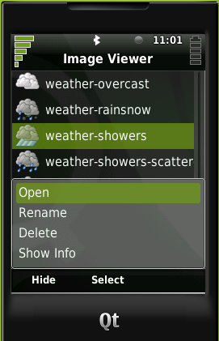
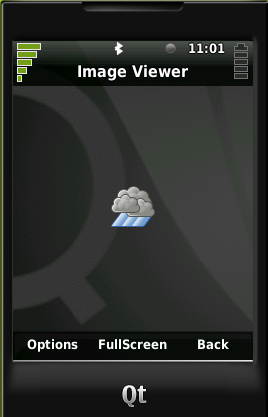
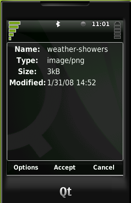
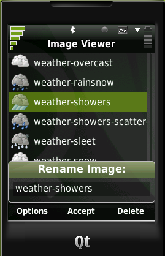

|
Home · All Namespaces · All Classes · Grouped Classes · Modules · Functions | |
Welcome to the Image Viewer Tutorial.
Image Viewer Tutorial Contents
The Image Viewer application will run on a Greenphone SDK 4.3. The application consists of several screens.
The list Screen shows a list of images. Each list item contains:
It shows all images available on the content system.
Actions
Key-Actions
The image screen shows the selected image. If the image is smaller than the screen, the image is not zoomed in. If the image is larger than the screen the image is fitted.
Actions
Key-Actions
The info dialog displays information about the current image. The following informations shall be displayed:
Actions
Key-Actions
| List Screen | Image Screen | Info Screen | Rename Dialog |
|---|---|---|---|
 |  |  |  |
For the parts 1-7 the source code can be found in examples/imageviewer
First the project file has to be created (qbuild.pro) for the Qt Extended build system.
File: qbuild.pro
TEMPLATE=app
CONFIG+=qtopia
TARGET=iviewer
CONFIG+=quicklaunch
HEADERS += iviewer.h
SOURCES += main.cpp iviewer.cpp
Here a Qt Extended application is declared (iviewer). The start code will be in main and the application in iviewer{.h,.cpp}.
File: main.cpp
#include "iviewer.h"
#include <qtopiaapplication.h>
QTOPIA_ADD_APPLICATION(QTOPIA_TARGET, IViewer)
QTOPIA_MAIN
"IViewer" is the class name and "iviewer" is the executable name. The syntax is described here.
Classes: QtopiaApplication
File: iviewer.h
#ifndef IVIEWER_H
#define IVIEWER_H
#include <QStackedWidget>
#include <QWidget>
class IViewer : public QStackedWidget
{
Q_OBJECT
public:
IViewer(QWidget *parent=0, Qt::WFlags f=0);
};
#endif
Classes: QStackedWidget, QWidget
The IViewer should be a QStackedWidget derived class. The widget stack will be used later to manage our screens. The constructor needs to have the QWidget and Qt::WindowFlags as parameters, due to the QTOPIA macros in main.cpp.
File: iviewer.cpp
#include "iviewer.h"
IViewer::IViewer(QWidget *parent, Qt::WFlags /*f*/)
: QStackedWidget(parent)
{
_listScreen = 0;
_imageScreen = 0;
setCurrentWidget(listScreen());
setWindowTitle("Image Viewer");
}
Namespace: Qt
It is now time for the first run. qbuild must be called. When the QVFB emulator is running, the application can be started with ./iviewer. This should display an empty application in the emulator. Great!
The list screen will be derived from the QListWidget for convenience.
File: listscreen.h
#ifndef LISTSCREEN_H
#define LISTSCREEN_H
#include <QListWidget>
class IViewer;
class QContentSet;
class QContentSetModel;
class QAction;
class QKeyEvent;
class ImageScreen;
class InfoScreen;
class ListScreen : public QListWidget
{
Q_OBJECT
public:
ListScreen(IViewer *viewer);
private:
IViewer *_viewer;
};
#endif
Classes: QListWidget
As parent, the iviewer is passed and the pointer is stored in _iviewer. The forward declaration (class IViewer) is used to avoid dependency with the created header files. Dependencies to Qt/Qt Extended header files do not have to be handled.
File: listscreen.cpp
#include "listscreen.h"
#include "iviewer.h"
ListScreen::ListScreen(IViewer *viewer)
: QListWidget(viewer), _viewer(viewer)
{
}
The list widget is constructed and the _viewer is initialized. The project (qbuild.pro) should know about the new class. The following lines must be added to the qbuild.pro file:
File: qbuild.pro
SOURCES += listscreen.cpp
HEADERS += listscreen.h
Now, qbuild can be run again. The application should still display an empty screen. To see something useful, the screen in the iviewer has to be created and the list must be populated with some content. This will be the next step.
| Copyright © 2009 Trolltech | Trademarks | Qt Extended 4.4.3 |